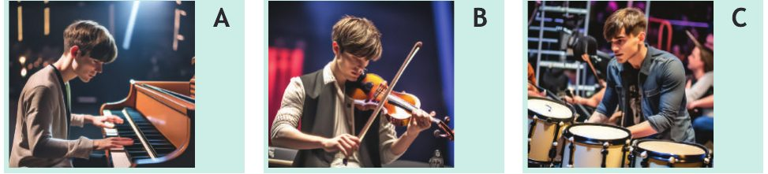
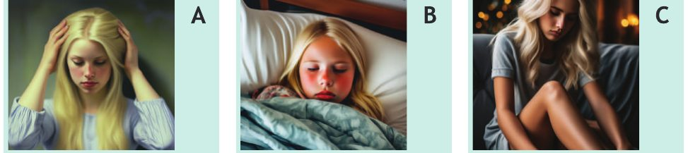
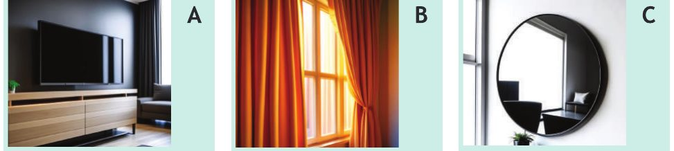
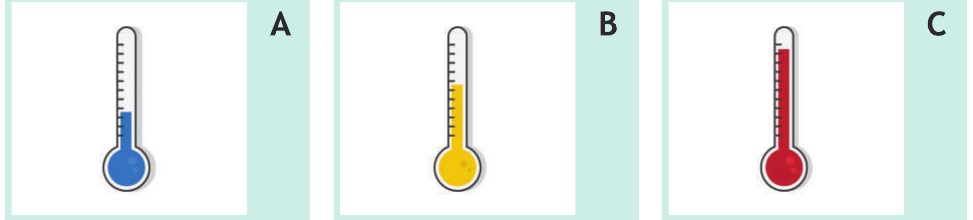
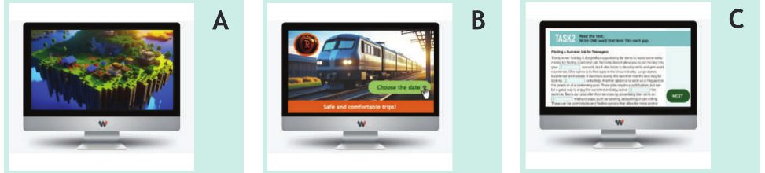
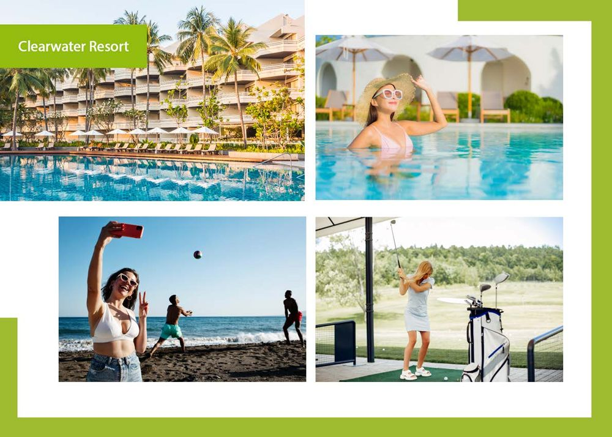
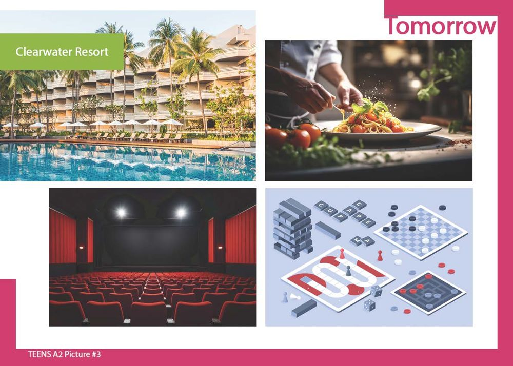
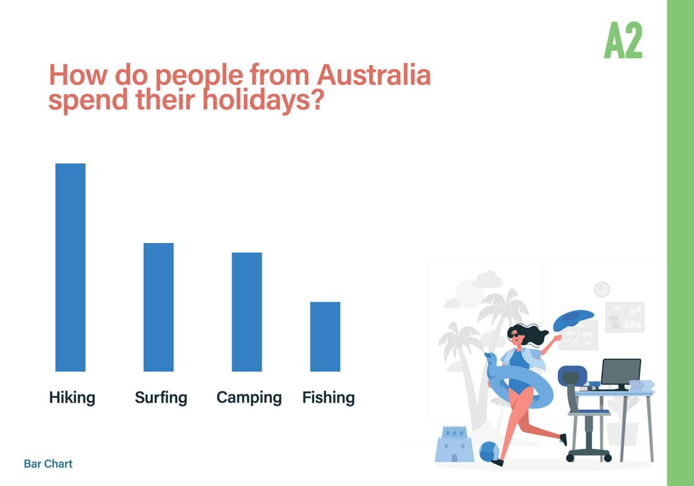

Wiseman Teens A2 · Mock Test
This is a full practice test in the Wiseman Skills Teens A2 format: Listening (5 tasks, 25 questions) Reading & Writing (7 tasks: 31 questions + an email and a story) and Speaking practice (3 pictures and a bar chart).
- how many points you get in Listening and in Reading, task by task;
- which question types still cause problems — you see the correct answer straight away;
- whether your email and story fit the word limits (35–50 and 45–60 words).
Timing in the exam
- Listening — about 30 minutes
- Reading & Writing — 1 hour 10 minutes
- Speaking — about 10 minutes, one-to-one with the examiner
Type your name at the top first. Your answers are saved on this device as you work, so you can close the page and come back later.
Listening · Task 1
You will hear 5 conversations. For each conversation, choose the correct picture (A–C).
The recording includes the instructions and plays each text twice, as in the exam.
1 What is the student playing at the concert?

2 Why can’t the girl go to school today?

3 What are they going to buy for their house?

4 Why didn’t David’s family go to the lake last weekend?

5 What is Bradley doing on his computer?

Listening · Task 2
Listen to the dialogue. Fill in the gaps with one word, number, date or time.
The recording includes the instructions and plays each text twice, as in the exam.
1 Paul and Katya still need to pack in their luggage for their holiday.
2 Bus number goes to the airport.
3 Katya is excited to see the beautiful in the city.
4 Paul can’t wait to use the in the hotel.
5 They have to take their to Paul’s sister before they go to the airport.
Listening · Task 3
Listen to Lauren and Joe talk about plans for the weekend. Where is each person going? For numbers 1–6, choose the correct answer (A–H). Number 1 is an example. You will not need two of the letters.
The recording includes the instructions and plays each text twice, as in the exam.
- A The city centre
- B Countryside house
- C A hotel
- D An island
- E The mountains
- F The sea
- G A village
- H The woods
1 Hannah — E (The mountains) example
2 James
3 Ian
4 Craig
5 Maisy
6 Flora
Listening · Task 4
Listen to the dialogue. For each question (1–5), choose the correct answer (A–C).
The recording includes the instructions and plays each text twice, as in the exam.
1 When does Ken’s mum have to leave the house?
2 Where is Ken going with his friends?
3 What does Ken need to give to his sister?
4 Which colour jacket should Ken take with him?
5 What food does Ken’s Mum want from the supermarket?
Listening · Task 5
You will hear 5 dialogues or monologues. For each question (1–5), choose the correct answer.
The recording includes the instructions and plays each text twice, as in the exam.
1 Where does Ian want to go with his grandad?
2 Who is Angela?
3 What has Samantha lost?
4 How much is the food?
5 Which picture does Connor choose?
Reading & Writing · Task 1
Read the text messages. For each number 1–6, choose True (T) or False (F).
Message 1
1 Emma and Jack found a wallet under a bench.
2 They plan to keep the wallet for themselves.
Message 2
3 They have already cooked this week.
4 Ben is cooking the main course.
Message 3
5 Mia and Enrique are teachers.
6 Enrique wants to continue having English lessons.
Reading & Writing · Task 2
Read the texts below. For each question (1–7), choose the correct answer (A, B, C).
If you’re a street food lover like me, then Food Fiesta Market is wonderful! While I walked through the market, the smells of various meals were in the air. From kebabs to samosas, there was something for everyone. My favourite part was the ‘Hot and Spicy Challenge’ where people try to eat very hot food. I needed a cold drink! The friendly workers were nice, telling stories of their countries. I had to try the chicken curry from India, which I needed on a cold day. Food Fiesta Market gives you an eating adventure that makes you want to go back again and again.
The Global Street Feast took me on a world tour! This busy market had a lot of international dishes. From Polish dumplings to Thai soups, I could get anything I wanted. A fun part was the excellent chefs, who surprised us with unusual meals every hour. As I ate, a live Mexican band played for all the visitors. The market’s eco-friendly ideas were nice, with many paper boxes for food and recycling bins. You must go to this place! It brings the world’s best food to one big market in my city.
Street Eats took me on a journey through the tastes of Asia. In a small alley, this market was a lovely surprise. I couldn’t stop watching the chefs in the busy kitchens! I liked one place where you could choose your favourite vegetables and meats, and then a chef made the dish you wanted. There were many beautiful Asian lamps and sounds, making it feel very comfortable. As I ate the best vegetable and rice dish, I watched as hundreds of people enjoyed themselves. Street Eats is an adventure for any foodie looking for a taste of Asia’s finest street food.
Which food market…
1 had chefs that made any food for the customer?
2 served food which was too hot for a visitor?
3 was in a very small area?
4 wants to help nature?
5 had a musical group playing?
6 had stories of other countries?
7 had nice furniture?
Reading & Writing · Task 3
Read the text. Write ONE word that best fills each gap.
Dear students,
Soon we have our International Countries Day 1 Friday next week! We want to celebrate all of the different countries and cultures around the 2 at school with all of our students and teachers.
We are going to have lots of things to do, and you can all be a part of it! There will 3 lots of songs, dances and presentations from all of the countries that you pick. You can also try different food and drinks 4 our school canteen is going to cook for you. It is going to be a fantastic day of learning and fun!
If you have any ideas of things you want to do or if you want to share 5 family’s home country, please come and see me in my office.
Let’s come together to make this day a special day as we find 6 about the beauty of our world.
I’m excited to see you all at our wonderful International Countries Day!
7 wishes,
Head Teacher,
Mrs McGowan.
Reading & Writing · Task 4
Read the text. For each question (1–5), choose the correct answer (A–C).
Teens’s Online Channel Becomes Famous!
A brother and sister from the small village of Fleeton in the United Kingdom have become famous because of their online nature channel. Leon and Cara’s online interest has quickly grown, with many nature lovers all over the United Kingdom watching.
The pair’s channel is about the joys of wild animals and nature. They make interesting videos and photographs, showing the beauty of their village as well as the forests and rivers around it. “I didn’t think our channel would get so big, but it did!” said a happy Cara.
Their hobbies and interests are hiking outside, watching animals, and learning about different natural areas. Cara’s favourite hobby is bird watching, while Leon enjoys taking photos of the things he sees.
Their journey began when they found a baby bird in pain in their garden. Helping the bird, they filmed it getting better and then put it back into the wild. The village’s newspaper wrote about the story and that was when the channel became popular.
They know each other very well and make their channel together. Cara likes writing the show, while Leon likes photography and making videos.
Like most brothers and sisters, they want to do different things in the future. Cara dreams of helping animals, but Leon can see himself making films and TV shows.
Their parents are pleased with them. They were worried about the online world, but now they are happy about their children’s work and believe their channel is only going to grow in the future.
1 Many people ______ watch their online channel.
2 How did Cara feel about the channel becoming popular?
3 ______ started their interest in making online videos.
4 The pair’s Mum and Dad are now ______ about what they are doing online.
5 Which sentence best describes Cara and Leon?
Reading & Writing · Task 5
Read the text. For each blank (1–6), choose the option (A–C) that fits best.
The Great Fire of London
The Great Fire of London was a terrible event that happened in September 1666. It started on a small street 1______ a cake shop and quickly moved through the city, causing a lot of damage. The fire didn’t stop 2______ four days. It burnt thousands of buildings and many Londoners were without a home.
The fire was 3______ because of strong winds and the city’s small wooden houses and buildings. It was very difficult to stop the fire because everything was slower then.
After the Great Fire, there were not many of London’s old buildings. However, the fire also started big changes and the city became better. The people of London 4______ new buildings and houses which were not made of wood anymore. 5______ made wider streets to stop future fires from being so bad.
The Great Fire of London is still very important in 6______ city’s history, and you can still see it in the city today.
1
2
3
4
5
6
Reading & Writing · Task 6
Write an email in 35–50 words.
You are going to stay at your friend’s house in London. It’s the school holidays. Write an email to your friend, Andrea.
- Say what you have done so far in the holidays
- Say where you would like to go in London and why
- Ask if Andrea can meet you at the airport
Reading & Writing · Task 7
Write a story in 45–60 words.
Write a story with this beginning:
Speaking · Picture 1 — Today
Look at the picture. Answer the questions aloud — try to speak for about 1 minute. Record yourself: your last recording on each screen is sent to your teacher with Check & Submit (don’t reload the page before that).

- Where are these people? What is the place like?
- What are the people doing now? Describe two of the photos.
- Which activity would you like to do here today? Why?
Useful language — Present Continuous: She is swimming… They are playing…
Speaking · Picture 2 — Yesterday
Look at the picture. Answer the questions aloud — try to speak for about 1 minute. Record yourself: your last recording on each screen is sent to your teacher with Check & Submit (don’t reload the page before that).

- Imagine you were at Clearwater Resort yesterday. What did you do?
- Which photo shows the best part of your day? Why?
- Did you buy anything? What?
Useful language — Past Simple: Yesterday I went… We visited… I bought…
Speaking · Picture 3 — Tomorrow
Look at the picture. Answer the questions aloud — try to speak for about 1 minute. Record yourself: your last recording on each screen is sent to your teacher with Check & Submit (don’t reload the page before that).

- What are you going to do at the resort tomorrow?
- Would you prefer to go to the cinema or play board games in the evening? Why?
- What food are you going to try?
Useful language — Future: Tomorrow I’m going to… I’d like to… I think I will…
Speaking · Bar chart
Look at the picture. Answer the questions aloud — try to speak for about 1 minute. Record yourself: your last recording on each screen is sent to your teacher with Check & Submit (don’t reload the page before that).

- What is this chart about?
- Which holiday activity is the most popular? Which is the least popular?
- Compare two activities: Surfing is more popular than…
- How do you like to spend your holidays? Why?
Useful language — Comparatives and superlatives: the most popular, more popular than, not as popular as
Finish & send
Check that you have answered every question and written both texts. Then press the button: your Listening and Reading answers are checked, and your score, both texts and a list of mistakes go to your teacher.
The email and the story are marked by your teacher, so they are not part of the score you see here. Your Speaking recordings (the last one on each screen) are sent to your teacher too.
All answers are now marked on every page: green = right, red = your wrong answer. Go back and look at them.